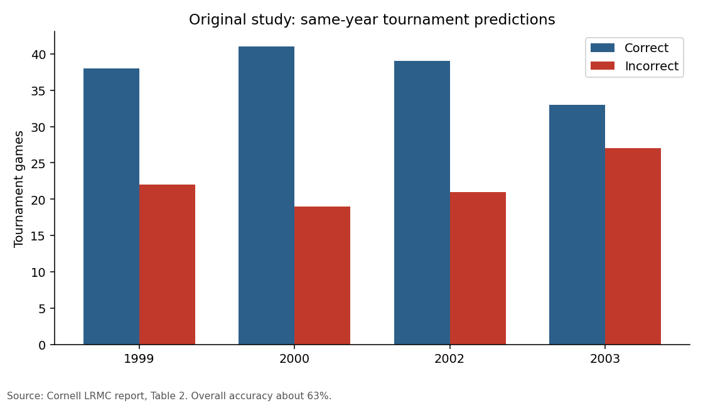

NCAA Markov Ranking
Hover, zoom, and click a team to see its games. This page reads the demo outputs already in the repo. It is not a new model.
Original Cornell Study results and Current Python Reimplementation results are on separate tabs. Do not mix them.
Synthetic 12-team / 72-game season from data/sample/demo_season.csv. These numbers are not NCAA historical results.
Loading demo outputs...
Click a bar to highlight that team's games.
Rankings
Click a column header to sort. π is the Markov steady-state share.
From the Cornell report on late-1990s / early-2000s data. These are images from that report, not a live model, because the original Sports Reference file is not in this repo.
- Margin logistic roughly (a, b) ≈ (0.0504, 0.8052) with h = 2
- About 63% of same-year NCAA tournament games predicted correctly across the years tabulated
- About 68% when using one season’s model on the next tournament
Same-year tournament predictions from the Cornell report:
